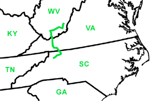

Day Six
Droop, WV - Doughton Park, NC
Date: 06/16/2002
Distance: 237 miles
Weather: Mostly cloudy. Low 70's.
Happy Father's day to Brad and James!
Breakfast at 9:00.
Went back to Battlefield State Park to say goodbye to Hanna. We swung by the lookout tower on our way out.
On the road by 11:00. Route 219 to 64 to 77 to the Blue Ridge Parkway.
Bright red and pink poppies on the side of the highway. West Virginia wildflowers.
In Virginia, when a mountain meets a highway, they go through the mountain.
Dinner and camping in Doughton Park, off of the Blude Ridge Parkway.
A deserted campground, and a good night for whiffle ball and rummy 500.